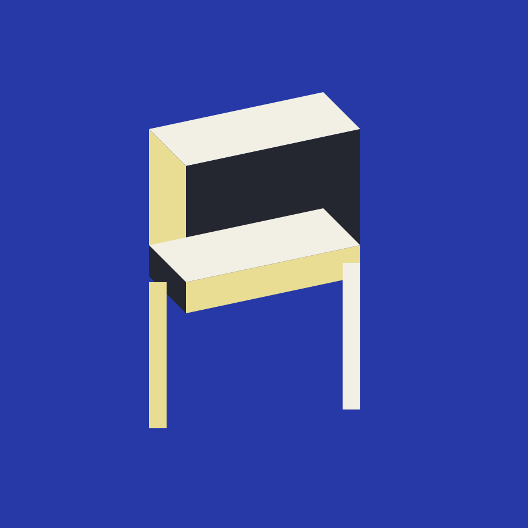
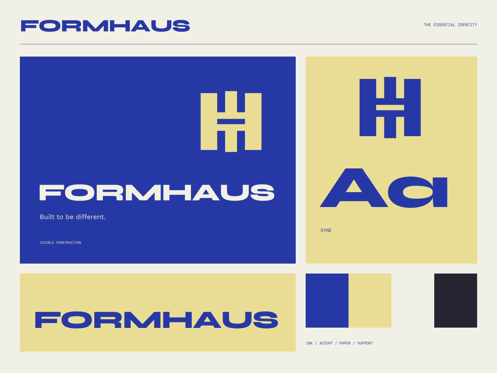

01
Construction first
Objects whose structure is also their character.
FURNITURE / FORM / CONSTRUCTION
Built to be different. A structure worth living with.

A coherent little world
A structure worth living with. Built to be different.
01
Objects whose structure is also their character.
02
Useful forms made with respect for what they are made from.
03
Design that earns its space by being used.

The point of view
Isometric furniture studies, exposed joins, ultramarine structural frames, and expanded industrial type. Nothing disguises how the system is put together.